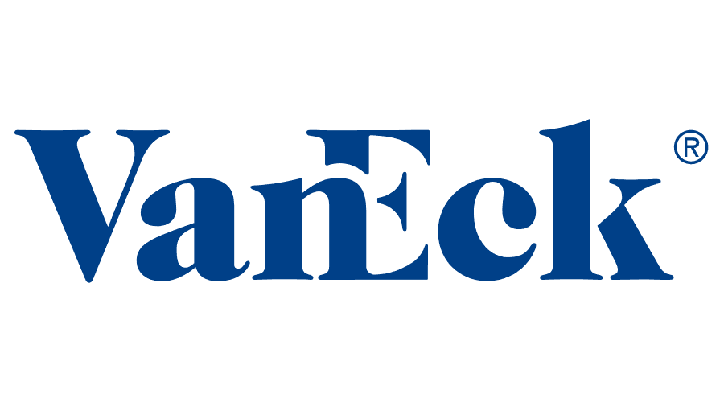
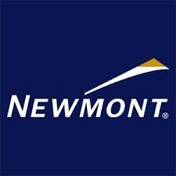
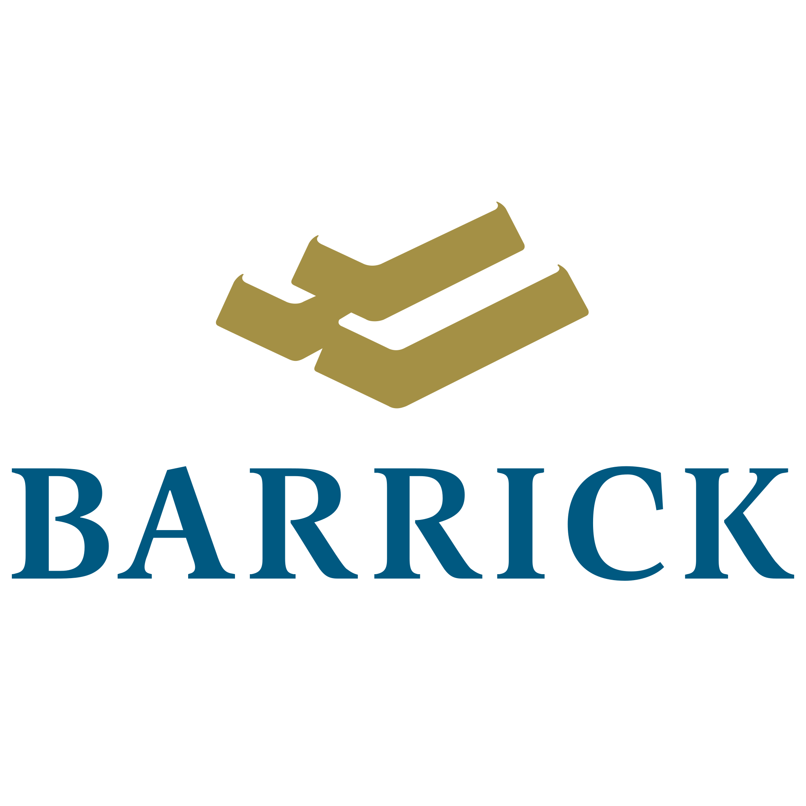

The Materials Sector
What is the Materials Sector?
The basic materials sector is an industry category made up of businesses engaged in the discovery, development, and processing of raw materials. The sector includes companies engaged in mining and metal refining, chemical products, and forestry products.
Companies in the basic materials sector are involved in the physical acquisition, development, and initial processing of the many products commonly referred to as raw materials. Oil, gold, and stone are examples.
Within this sector are the companies that supply most of the materials used in construction. That makes the companies and their stocks sensitive to changes in the business cycle. They tend to thrive when the economy is strong.
What is the Market Capitalization?
The total market value of all companies accross the Materials sector is $1.99 trillion.
What is the Market Sector Performance?
Looking at the 10 year lifespand till January
2020, Materials were up +87.38% for the decade.
Example Stocks: Materials
Vanguard Material ETF (VAW)
Seeks to track the performance of a benchmark index that measures the investment return of stocks in the materials sector.

SPDR Materials Select Sector (XLB)
The Materials Select Sector SPDR® Fund seeks to provide investment results that, before expenses, correspond generally to the price and yield performance of the Materials Select Sector Index (the "Index")

Market Vectors TR Gold Miners (GDX)
The VanEck Vectors Gold Miners (GDX) exchange traded fund (ETF) is the most liquid vehicle for investors and traders to gain exposure to gold mining companies. The ETF was established in 2006 by VanEck in the midst of gold's bull market as securities were created to satiate the appetite of precious metals investors.

Newmont Corp. (NEM)
Newmont acquires and develops mineral properties. The company produces primarily gold, but also silver, copper, zinc, and lead.

Barrick Gold (GOLD)
Barrick Gold Corporation is a mining company that produces gold and copper with 16 operating sites in 13 countries. It is headquartered in Toronto, Ontario, Canada.